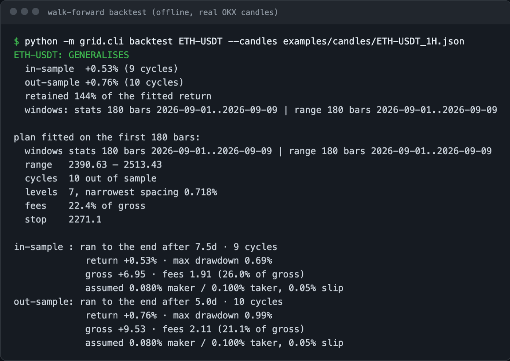
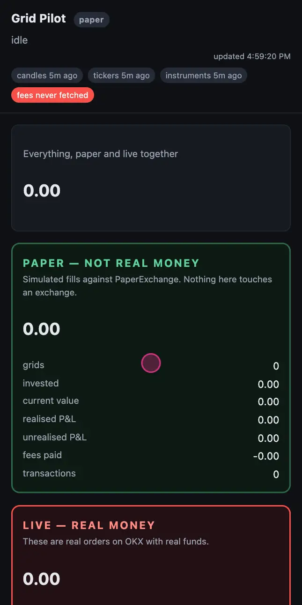

psst… touch my head
Hi, I'm Lea.
Computer Science & AI + BBA student · IE University
Computer Science & AI + BBA student · IE University

Hey 👋
I'm Lea, a Computer Science & AI + BBA student at IE University living in Madrid. I love coding, robotics, trading and building things that actually run.
I've always been curious about how things work, and the best way I've found to learn is to build them myself 🚀. I love development: taking an idea and turning it into something real that people can use. That's how I made Sylvie, my own AI assistant that runs fully on my laptop, KORE, a voice companion I started with my grandparents in mind, and Studiply, a study app that turns lectures into notes, flashcards and quizzes.
Lately I'm getting into robotics 🤖: putting AI into real devices, like a Raspberry Pi, so it can listen, talk and help people in their everyday life. I'm passionate about learning, and there's always something new I'm trying, whether it's a new model, a new framework or a whole new field.
I'm also passionate about trading and markets 📈, and about automating systems so they can run on their own, safely. That's what got me building TradeBunny, a crypto grid-trading system where I approve every plan and the risk rules live in the code, and Survival Council, an AI that starts with $50 and has to pay its own way to stay alive (in paper mode for now).
Outside of code, I speak Spanish, French and English, and you'll find me climbing, cheerleading, riding or dancing. I hope to keep creating things that matter and to contribute to a team where I can learn from great people. I'm looking for a Summer 2027 internship, so if you think we could build something together, let's talk! 😄
↓ Download CVSee my projects →


A private personal assistant that runs entirely on my own machine.
Sylvie is my personal AI assistant. She runs completely on my laptop, so nothing personal goes to the cloud. She uses open-source Qwen models: a 9B model for everyday chat, and a 27B model that I fine-tune myself for the best answers. She talks by voice in English, Spanish and French, remembers what I tell her, and can use my calendar, reminders and email, always asking first. Next, I want her to become the brain of KORE.


Real screenshots of Sylvie, then how she's built and her results.
A crypto grid-trading system where I approve every plan.
TradeBunny is my crypto grid-trading system. It scans coins and rejects the ones that don't fit, each with its reasons, and tests every grid on data it hasn't seen before. I approve every plan, and the risk rules are built into the code. It runs on paper for now.


Recorded from the real app running offline on made-up data.
Record a lecture, take notes, and get a summary, flashcards and quizzes.
Studiply is a study app for the iPhone and the web, with one library in the cloud. You record the class while you take live notes and mark the important or confusing moments, and you can ask a study assistant questions during the lecture. Afterwards it writes a summary into the same document without touching what you wrote, and you review with flashcards and quizzes made from your own material. It isn't on the App Store yet.


Screen designs from the repository.
An AI gets $50, pays for everything it uses, and has to grow its money without falling below a rising floor.
Survival Council is an experiment in autonomy. An AI starts with $50 and is told to maximise its total value, while paying for its own thinking, searches and trades. A “death floor” rises a little every day; if its net worth falls to it, everything is sold and it is switched off for good. The AI decides almost everything itself, but it can't touch the rules, the money, the keys or its own death. So far it has only run in paper-trading mode with test services, never with real money.

Recorded from the real app running offline on made-up data.
A proactive voice companion in Spanish for older people.
KORE is a voice companion that starts the conversation instead of waiting to be asked. It greets people when they wake up, remembers their stories and follows up on them. I started it with my grandparents in mind. Today the conversation runs on the Claude API, and tested code handles medicines, messages and calls for help. My next step is to bring in Sylvie, my own local model, as its brain.


Recorded from the real app running offline on made-up data.
Looking for Summer 2027 internships in software / AI engineering and fintech.
✉ lpesseygirod@gmail.comLinkedIn ↗GitHub ↗↓ CV